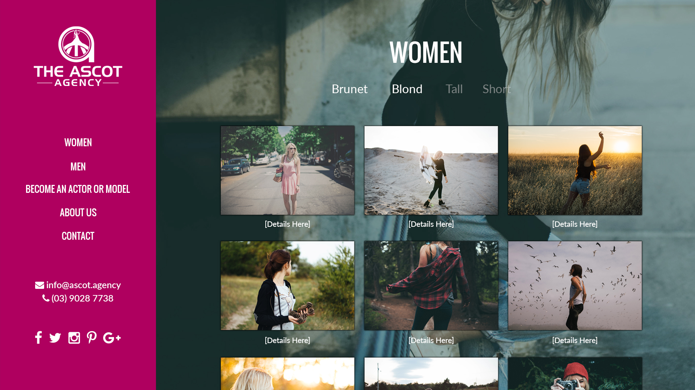
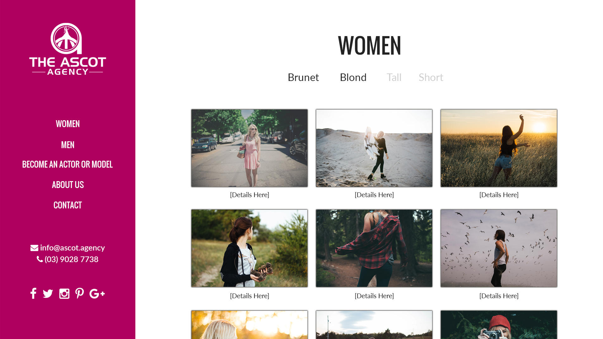

Transition between pages
The above animation was created with screenshots of the site to give you an idea of how the site would transition between pages. It's not scrolling. When needed each page will be able to scroll, but not between pages. You switch between pages by clicking on the menu item, meaning that the site would never have to reload, so once the user is on the site it will run smoothly. The possible exception to this would be the individual talent pages, discussed below.
Filters
Below you can see two mockups of the talent pages, one with a background-image and one with a blank background. You can also see that there are four options - "brunet", "blonde", "tall" and "short" - two of which are more transparent than the others. The idea is that, first off, there will be alot more options on the actual site, and second that by selecting and deselecting options you are actually filtering through a cataloge of talent that would update live as the person looking clicked on options.


Individual talent pages
The individual talent pages would eighter have their own separate pages, or show up as animated below. Also, I imagine that the actual talent pages will contain alot more information than the one below.
Management
To make the management of the site and the listed talent as simple as possible for Ascot Agency staff I would recommend building the site on WordPress or similar CMS. It comes with a user interface that would allow anyone with a login to add and edit talent entries with text, videos, photos, etc.
Become an actor or model
The "Become an actor or model" page would contain a form made up of plain text, multiple choice questions, single choice questions, checkboxes, and pretty much whatever else is needed. What I mean is that you are not limited to simply having people submit only plain text.
Favicons

I created a favicon design from you logo. I also created several other versions to cover just about every scenario, from bookmarks, to desktop icons, to mobile devices, etc.
A few more things
I haven't uploaded the site in it's current form here since I use GitHub for hosting, and then the code becomes availale to anyone who finds it. However, the site is in large part coded. Most of the images here are as stated screenshots of it. A few things of note not shown here are, one, that there is a progress bar at the top of the page as it loads. Two, when the user clicks on any photos or videos or such it will open up a slideshow starting on the photo or video clicked.